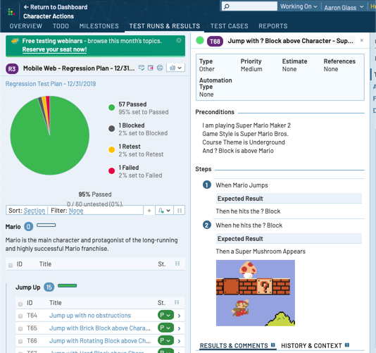
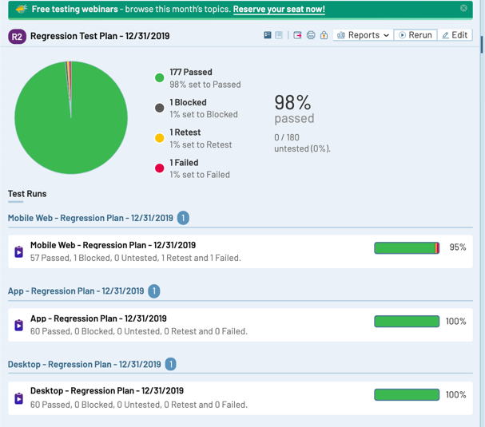

Here are a few screenshots from my experience with TestRail.


Personal notes and learnings from TestRail.
Test case management, run tracking, and milestone reporting. Used to manage thousands of test cases across multiple products and teams.
Here are a few screenshots from my experience with TestRail.


Personal notes and learnings from TestRail.